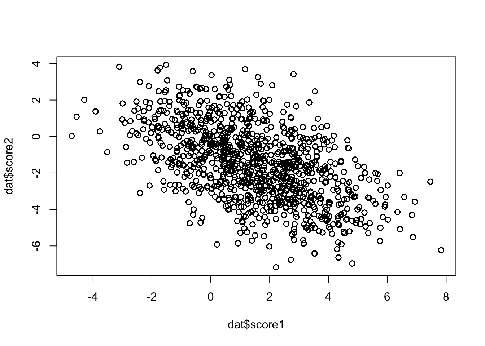
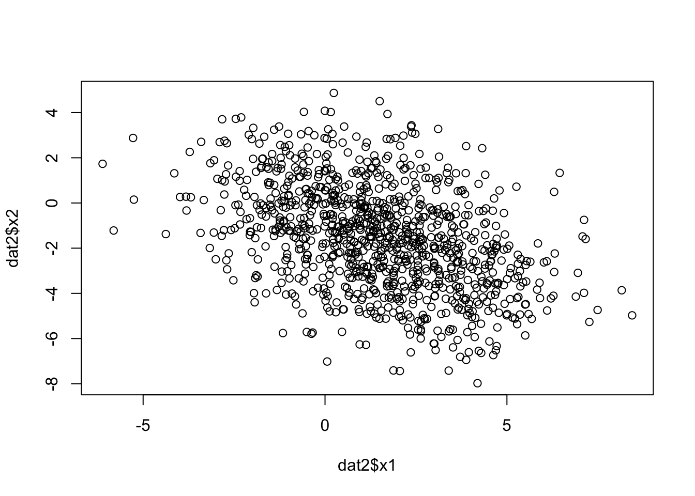
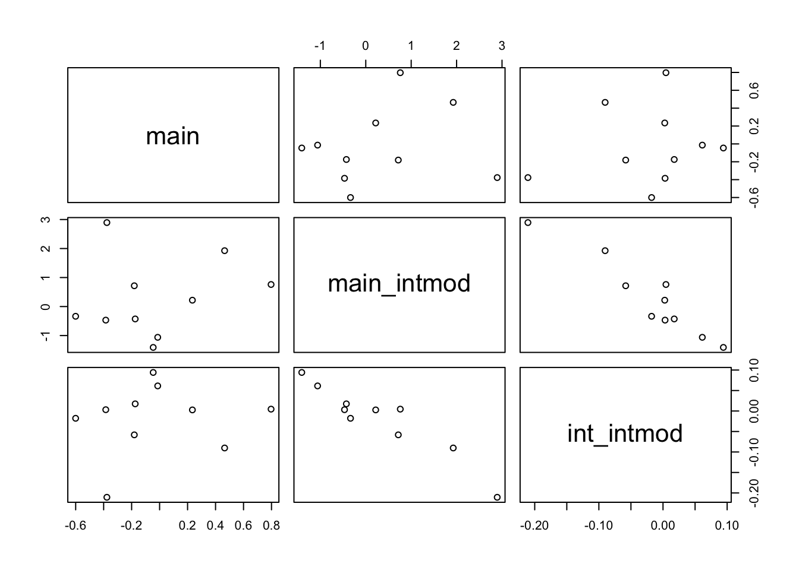

library(dplyr)
Attaching package: 'dplyr'The following objects are masked from 'package:stats':
filter, lagThe following objects are masked from 'package:base':
intersect, setdiff, setequal, unionset.seed(1234)Gibran Hemani
January 12, 2024
Work from Panagiota Pagoni looked at time-varying instruments for MR. Idea is to estimate the main and age interaction genetic effects on X, and then perform multivariable MR of main + interaction against outcome.
Simple model below to see what happens…
n_id individuals with x values for each age ranging from 1:n_age.n_snps and each SNP has a different effect on x before age 15 and after age 15y is influenced by x at age 12 and x at age 24. The effect of x on y has opposing directions at these two time points.x to obtain beta_gx, or estimate main + interaction effect of each SNP on x to get beta_gxm and beta_gxi.y to get beta_gybeta_gy ~ beta_gxbeta_gy ~ beta_gxm + beta_gxi
Attaching package: 'dplyr'The following objects are masked from 'package:stats':
filter, lagThe following objects are masked from 'package:base':
intersect, setdiff, setequal, unionSet parameters
Simulate x
dat <- lapply(
1:n_age, \(i) {
dat <- tibble(
id = 1:n_id,
age = i,
score1 = g %*% beta[,1] %>% drop(),
score2 = g %*% beta[,2] %>% drop(),
x = case_when(
age < 15 ~ rnorm(n_id) + score1,
TRUE ~ rnorm(n_id) + score2
)
)
}
) %>% bind_rows()
dat# A tibble: 30,000 × 5
id age score1 score2 x
<int> <int> <dbl> <dbl> <dbl>
1 1 1 -0.228 -0.100 0.478
2 2 1 -0.795 -0.700 -0.510
3 3 1 -0.144 0.972 -0.329
4 4 1 -1.74 0.505 -3.27
5 5 1 3.26 -5.00 3.30
6 6 1 3.47 -4.85 2.78
7 7 1 2.78 -1.75 2.12
8 8 1 5.40 -4.74 6.29
9 9 1 1.50 0.976 2.38
10 10 1 0.295 2.22 0.662
# ℹ 29,990 more rows
Simulate y
dat2 <- tibble(id = 1:n_id, x1 = subset(dat, age == 12)$x, x2 = subset(dat, age == 24)$x, y = x1 * beta_xy1 + x2 * beta_xy2 + rnorm(n_id))
plot(dat2$x1, dat2$x2)
Estimation of gx
dats <- dat %>% group_by(id) %>% slice_sample(n=1)
gx <- lapply(1:n_snp, \(i) {
summary(lm(x ~ g[,i] * age, data=dats))$coef[c(2, 4), ] %>%
as_tibble() %>%
mutate(what=c("main", "interaction"))
}) %>% bind_rows()
gx# A tibble: 20 × 5
Estimate `Std. Error` `t value` `Pr(>|t|)` what
<dbl> <dbl> <dbl> <dbl> <chr>
1 -1.06 0.218 -4.86 1.35e- 6 main
2 0.0613 0.0124 4.94 8.99e- 7 interaction
3 0.219 0.228 0.959 3.38e- 1 main
4 0.00270 0.0131 0.206 8.37e- 1 interaction
5 -1.41 0.217 -6.49 1.37e-10 main
6 0.0941 0.0124 7.60 6.86e-14 interaction
7 -0.468 0.222 -2.11 3.53e- 2 main
8 0.00321 0.0126 0.255 7.99e- 1 interaction
9 -0.336 0.219 -1.53 1.25e- 1 main
10 -0.0178 0.0121 -1.47 1.41e- 1 interaction
11 0.760 0.226 3.37 7.79e- 4 main
12 0.00458 0.0126 0.363 7.16e- 1 interaction
13 1.93 0.216 8.91 2.47e-18 main
14 -0.0902 0.0123 -7.31 5.47e-13 interaction
15 -0.427 0.239 -1.78 7.46e- 2 main
16 0.0175 0.0136 1.29 1.99e- 1 interaction
17 0.716 0.223 3.21 1.39e- 3 main
18 -0.0582 0.0126 -4.61 4.57e- 6 interaction
19 2.89 0.187 15.5 1.04e-48 main
20 -0.211 0.0107 -19.8 1.37e-73 interactiongxm <- lapply(1:n_snp, \(i) {
summary(lm(x ~ g[,i], data=dats))$coef %>%
as_tibble() %>% slice_tail(n=1)
}) %>% bind_rows()
gxm# A tibble: 10 × 4
Estimate `Std. Error` `t value` `Pr(>|t|)`
<dbl> <dbl> <dbl> <dbl>
1 -0.0135 0.120 -0.112 9.11e- 1
2 0.234 0.124 1.89 5.95e- 2
3 -0.0457 0.121 -0.377 7.06e- 1
4 -0.385 0.120 -3.22 1.32e- 3
5 -0.600 0.119 -5.04 5.53e- 7
6 0.797 0.121 6.60 6.75e-11
7 0.465 0.122 3.83 1.38e- 4
8 -0.174 0.124 -1.41 1.60e- 1
9 -0.181 0.122 -1.48 1.39e- 1
10 -0.377 0.121 -3.11 1.91e- 3Estimation of gy
gy <- lapply(1:n_snp, \(i) {
summary(lm(y ~ g[,i], data=dat2))$coef %>%
as_tibble() %>% slice_tail(n=1)
}) %>% bind_rows()
gy# A tibble: 10 × 4
Estimate `Std. Error` `t value` `Pr(>|t|)`
<dbl> <dbl> <dbl> <dbl>
1 -1.23 0.120 -10.3 1.11e-23
2 0.248 0.130 1.91 5.69e- 2
3 -1.22 0.121 -10.1 8.70e-23
4 -0.442 0.125 -3.53 4.34e- 4
5 -0.301 0.126 -2.38 1.73e- 2
6 0.517 0.128 4.03 6.03e- 5
7 1.44 0.120 12.0 3.86e-31
8 -0.492 0.129 -3.81 1.50e- 4
9 1.03 0.124 8.29 3.71e-16
10 2.30 0.105 22.0 1.90e-87Univariable MR
Call:
lm(formula = gy$Estimate ~ gxm$Estimate, weights = 1/gy$`Std. Error`^2)
Weighted Residuals:
Min 1Q Median 3Q Max
-12.552 -5.469 -2.040 4.930 20.153
Coefficients:
Estimate Std. Error t value Pr(>|t|)
(Intercept) 0.2739 0.4130 0.663 0.526
gxm$Estimate 0.2270 1.0380 0.219 0.832
Residual standard error: 10.62 on 8 degrees of freedom
Multiple R-squared: 0.005941, Adjusted R-squared: -0.1183
F-statistic: 0.04782 on 1 and 8 DF, p-value: 0.8324Multivariable MR
summary(lm(gy$Estimate ~ gx$Estimate[gx$what=="main"] + gx$Estimate[gx$what=="interaction"], weight=1/gy$`Std. Error`^2))
Call:
lm(formula = gy$Estimate ~ gx$Estimate[gx$what == "main"] + gx$Estimate[gx$what ==
"interaction"], weights = 1/gy$`Std. Error`^2)
Weighted Residuals:
Min 1Q Median 3Q Max
-2.3296 -0.7207 -0.0687 0.2519 3.7992
Coefficients:
Estimate Std. Error t value Pr(>|t|)
(Intercept) -0.06306 0.07384 -0.854 0.42137
gx$Estimate[gx$what == "main"] 0.77715 0.17219 4.513 0.00275 **
gx$Estimate[gx$what == "interaction"] -1.09444 2.64623 -0.414 0.69155
---
Signif. codes: 0 '***' 0.001 '**' 0.01 '*' 0.05 '.' 0.1 ' ' 1
Residual standard error: 1.827 on 7 degrees of freedom
Multiple R-squared: 0.9743, Adjusted R-squared: 0.9669
F-statistic: 132.5 on 2 and 7 DF, p-value: 2.733e-06tibble(
main = gxm$Estimate,
main_intmod = gx$Estimate[gx$what=="main"],
int_intmod = gx$Estimate[gx$what=="interaction"]
) %>% plot()
Univariable MR using only main effect from interaction model
summary(lm(gy$Estimate ~ gx$Estimate[gx$what=="main"] + gx$Estimate[gx$what=="interaction"], weight=1/gy$`Std. Error`^2))
Call:
lm(formula = gy$Estimate ~ gx$Estimate[gx$what == "main"] + gx$Estimate[gx$what ==
"interaction"], weights = 1/gy$`Std. Error`^2)
Weighted Residuals:
Min 1Q Median 3Q Max
-2.3296 -0.7207 -0.0687 0.2519 3.7992
Coefficients:
Estimate Std. Error t value Pr(>|t|)
(Intercept) -0.06306 0.07384 -0.854 0.42137
gx$Estimate[gx$what == "main"] 0.77715 0.17219 4.513 0.00275 **
gx$Estimate[gx$what == "interaction"] -1.09444 2.64623 -0.414 0.69155
---
Signif. codes: 0 '***' 0.001 '**' 0.01 '*' 0.05 '.' 0.1 ' ' 1
Residual standard error: 1.827 on 7 degrees of freedom
Multiple R-squared: 0.9743, Adjusted R-squared: 0.9669
F-statistic: 132.5 on 2 and 7 DF, p-value: 2.733e-06
Call:
lm(formula = gy$Estimate ~ gx$Estimate[gx$what == "interaction"],
weights = 1/gy$`Std. Error`^2)
Weighted Residuals:
Min 1Q Median 3Q Max
-3.5825 -2.5945 -0.6845 2.9359 5.0269
Coefficients:
Estimate Std. Error t value Pr(>|t|)
(Intercept) -0.07095 0.13653 -0.520 0.617
gx$Estimate[gx$what == "interaction"] -12.48205 1.47600 -8.457 2.92e-05 ***
---
Signif. codes: 0 '***' 0.001 '**' 0.01 '*' 0.05 '.' 0.1 ' ' 1
Residual standard error: 3.379 on 8 degrees of freedom
Multiple R-squared: 0.8994, Adjusted R-squared: 0.8868
F-statistic: 71.52 on 1 and 8 DF, p-value: 2.922e-05
Call:
lm(formula = gy$Estimate ~ gx$Estimate[gx$what == "main"], weights = 1/gy$`Std. Error`^2)
Weighted Residuals:
Min 1Q Median 3Q Max
-2.3163 -0.7453 -0.2029 0.3130 3.8931
Coefficients:
Estimate Std. Error t value Pr(>|t|)
(Intercept) -0.05969 0.06948 -0.859 0.415
gx$Estimate[gx$what == "main"] 0.84505 0.04916 17.190 1.33e-07 ***
---
Signif. codes: 0 '***' 0.001 '**' 0.01 '*' 0.05 '.' 0.1 ' ' 1
Residual standard error: 1.73 on 8 degrees of freedom
Multiple R-squared: 0.9736, Adjusted R-squared: 0.9703
F-statistic: 295.5 on 1 and 8 DF, p-value: 1.334e-07Make simulation and estimation functions from above
sim <- function(n_id, n_snp, n_age, beta_xy1, beta_xy2) {
g <- matrix(rbinom(n_id*n_snp, 2, 0.4), n_id, n_snp)
beta <- matrix(rnorm(n_snp * 2), n_snp, 2)
dat <- lapply(
1:n_age, \(i) {
dat <- tibble(
id = 1:n_id,
age = i,
score1 = g %*% beta[,1] %>% drop(),
score2 = g %*% beta[,2] %>% drop(),
x = case_when(
age < 15 ~ rnorm(n_id) + score1,
TRUE ~ rnorm(n_id) + score2
)
)
}
) %>% bind_rows()
dat2 <- tibble(id = 1:n_id, x1 = subset(dat, age == 12)$x, x2 = subset(dat, age == 24)$x, y = x1 * beta_xy1 + x2 * beta_xy2 + rnorm(n_id))
dats <- dat %>% group_by(id) %>% slice_sample(n=1)
gx <- lapply(1:n_snp, \(i) {
summary(lm(x ~ g[,i] * age, data=dats))$coef[c(2, 4), ] %>%
as_tibble() %>%
mutate(what=c("main", "interaction"))
}) %>% bind_rows()
gxm <- lapply(1:n_snp, \(i) {
summary(lm(x ~ g[,i], data=dats))$coef %>%
as_tibble() %>% slice_tail(n=1)
}) %>% bind_rows()
gy <- lapply(1:n_snp, \(i) {
summary(lm(y ~ g[,i], data=dat2))$coef %>%
as_tibble() %>% slice_tail(n=1)
}) %>% bind_rows()
return(list(gy=gy, gx=gx, gxm=gxm))
}
estimation <- function(ests) {
return(list(
main = with(ests, summary(lm(gy$Estimate ~ 0 + gxm$Estimate, weight=1/gy$`Std. Error`^2))$coef),
full = with(ests, summary(lm(gy$Estimate ~ 0 + gx$Estimate[gx$what=="main"] + gx$Estimate[gx$what=="interaction"], weight=1/gy$`Std. Error`^2))$coef),
int_main = with(ests, summary(lm(gy$Estimate ~ 0 + gx$Estimate[gx$what=="main"], weight=1/gy$`Std. Error`^2))$coef),
int_int = with(ests, summary(lm(gy$Estimate ~ 0 + gx$Estimate[gx$what=="interaction"], weight=1/gy$`Std. Error`^2))$coef)
))
}$main
Estimate Std. Error t value Pr(>|t|)
gxm$Estimate -0.03131924 0.02202768 -1.421813 0.1887952
$full
Estimate Std. Error t value
gx$Estimate[gx$what == "main"] -0.0235155 0.02371966 -0.9913928
gx$Estimate[gx$what == "interaction"] -0.1510470 0.46080124 -0.3277921
Pr(>|t|)
gx$Estimate[gx$what == "main"] 0.3505285
gx$Estimate[gx$what == "interaction"] 0.7514828
$int_main
Estimate Std. Error t value Pr(>|t|)
gx$Estimate[gx$what == "main"] -0.01642267 0.009222158 -1.780784 0.1086416
$int_int
Estimate Std. Error t value Pr(>|t|)
gx$Estimate[gx$what == "interaction"] 0.2656993 0.1885832 1.408923 0.1924575No associations at any model
$main
Estimate Std. Error t value Pr(>|t|)
gxm$Estimate 2.210015 0.1139279 19.39837 1.188461e-08
$full
Estimate Std. Error t value
gx$Estimate[gx$what == "main"] 2.066242 0.06113766 33.79655
gx$Estimate[gx$what == "interaction"] 29.105622 1.39147350 20.91712
Pr(>|t|)
gx$Estimate[gx$what == "main"] 6.416918e-10
gx$Estimate[gx$what == "interaction"] 2.863315e-08
$int_main
Estimate Std. Error t value Pr(>|t|)
gx$Estimate[gx$what == "main"] 1.025186 0.2498177 4.103738 0.002661794
$int_int
Estimate Std. Error t value Pr(>|t|)
gx$Estimate[gx$what == "interaction"] -9.177769 9.135675 -1.004608 0.3413298Main effect as expected, interaction term is there because of accumulated effect?
$main
Estimate Std. Error t value Pr(>|t|)
gxm$Estimate 0.7739871 0.2630003 2.942913 0.01640885
$full
Estimate Std. Error t value
gx$Estimate[gx$what == "main"] 0.9913733 0.01897743 52.23960
gx$Estimate[gx$what == "interaction"] 4.9867301 0.32304742 15.43653
Pr(>|t|)
gx$Estimate[gx$what == "main"] 1.998216e-11
gx$Estimate[gx$what == "interaction"] 3.084458e-07
$int_main
Estimate Std. Error t value Pr(>|t|)
gx$Estimate[gx$what == "main"] 0.7830066 0.06978057 11.22098 1.361042e-06
$int_int
Estimate Std. Error t value Pr(>|t|)
gx$Estimate[gx$what == "interaction"] -7.016759 3.95985 -1.771976 0.1101626Almost no interaction effect
$main
Estimate Std. Error t value Pr(>|t|)
gxm$Estimate 1.084445 0.37676 2.878345 0.0182271
$full
Estimate Std. Error t value
gx$Estimate[gx$what == "main"] 1.016923 0.02454421 41.43228
gx$Estimate[gx$what == "interaction"] 25.108538 0.42035475 59.73178
Pr(>|t|)
gx$Estimate[gx$what == "main"] 1.268347e-10
gx$Estimate[gx$what == "interaction"] 6.856027e-12
$int_main
Estimate Std. Error t value Pr(>|t|)
gx$Estimate[gx$what == "main"] -0.2712219 0.2336052 -1.161027 0.2754984
$int_int
Estimate Std. Error t value Pr(>|t|)
gx$Estimate[gx$what == "interaction"] 9.805954 2.778471 3.529263 0.006421374Only shows an interaction effect.
No idea what is going on. This model is probably too simple, doesn’t include auto-correlation in x across age.
R version 4.3.2 (2023-10-31)
Platform: aarch64-apple-darwin20 (64-bit)
Running under: macOS Ventura 13.6
Matrix products: default
BLAS: /Library/Frameworks/R.framework/Versions/4.3-arm64/Resources/lib/libRblas.0.dylib
LAPACK: /Library/Frameworks/R.framework/Versions/4.3-arm64/Resources/lib/libRlapack.dylib; LAPACK version 3.11.0
locale:
[1] en_GB.UTF-8/en_GB.UTF-8/en_GB.UTF-8/C/en_GB.UTF-8/en_GB.UTF-8
time zone: Europe/London
tzcode source: internal
attached base packages:
[1] stats graphics grDevices utils datasets methods base
other attached packages:
[1] dplyr_1.1.4
loaded via a namespace (and not attached):
[1] digest_0.6.33 utf8_1.2.4 R6_2.5.1 fastmap_1.1.1
[5] tidyselect_1.2.0 xfun_0.41 magrittr_2.0.3 glue_1.6.2
[9] tibble_3.2.1 knitr_1.45 pkgconfig_2.0.3 htmltools_0.5.7
[13] rmarkdown_2.25 generics_0.1.3 lifecycle_1.0.4 cli_3.6.1
[17] fansi_1.0.5 vctrs_0.6.4 compiler_4.3.2 tools_4.3.2
[21] pillar_1.9.0 evaluate_0.23 yaml_2.3.7 rlang_1.1.2
[25] jsonlite_1.8.7 htmlwidgets_1.6.3